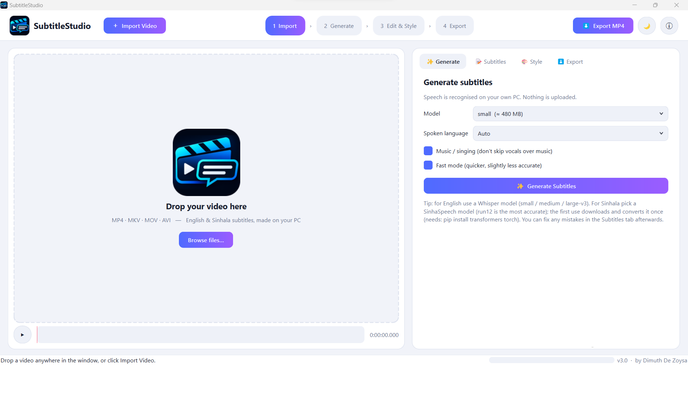

SubtitleStudio v3.0 Desktop Interface — Clean, distraction-free local workspace for Windows.
Everything runs directly on your machine—combining offline speech recognition with intuitive editing and direct video export.
Speech is recognised directly on your own PC. Your videos and audio never leave your computer—zero cloud uploads or usage limits.
Choose Whisper (small, medium, large-v3) for English or SinhaSpeech (run12) for high-accuracy Sinhala transcription.
Keep vocals over background music with Music / singing mode, or switch on Fast mode when you need quicker turnarounds.
Refine any recognized lines in the Subtitles tab, customize visual appearance in Style, and export finished MP4 videos or subtitle files.
Follow the streamlined pipeline built right into SubtitleStudio's top navigation bar.
Drag and drop MP4, MKV, MOV, or AVI files anywhere in the window, or click Import Video.
Pick your model (Whisper or SinhaSpeech), select Auto or specific spoken language, and generate subtitles offline.
Fix any transcription mistakes in the Subtitles tab and customize fonts, colors, and placement in the Style tab.
Render your styled subtitles directly into a ready-to-share MP4 video or export clean subtitle tracks.
Download SubtitleStudio from GitHub. English Whisper models (small, medium, large-v3) work right away, while Sinhala SinhaSpeech (run12) automatically downloads and converts on first use.
pip install transformers torch
Supports small (≈ 480 MB), medium, and large-v3 locally on CPU or GPU.
Dedicated Sinhala speech recognition (run12 recommended for highest accuracy).
Import MP4 · MKV · MOV · AVI and export styled MP4 videos or subtitle tracks.